Kostenloses Browserspiel · 16 Fälle · 1888–2025
Ein Detektivspiel, in dem Sie Fälle lösen, indem Sie die Akten lesen.
Sie sind neu im Team 2 des Gewaltdezernats im Polizeirevier Seoul-Seobu. M, schon länger im Team, ist versetzt worden und hat Ihnen den Schlüssel zu einer Schreibtischschublade mit ungelösten Fällen hinterlassen, die mehr als hundert Jahre zurückreichen.
Herumlaufen müssen Sie nicht. Jeder Fall kommt als Akten seiner Zeit: ein Halfpenny-Blatt im London von 1888, Polizeipapiere und Telegramme aus dem Gyeongseong der 1930er, ein Gästebuch im Seoul von 1971, ein Polizei-PC von 2006, ein Gruppenchat von 2023. Klicken Sie ein unterstrichenes Wort an, um es ins Notizbuch zu schreiben, und suchen Sie damit in den Archiven oder fragen Sie die Beteiligten danach.
Im Ermittlungsbericht benennen Sie den Täter, vermerken Mittäter und Mitwisser, die es vertuscht haben, und belegen jede Behauptung mit einer Beweisnotiz. Der Fall ist erst gelöst, wenn alles stimmt. Sind alle zwölf ungelösten Fälle abgeschlossen, können Sie den Brief von M lesen.
| Nr. | Fall | Jahr | Ort · Dauer | Schwierigkeit |
|---|---|---|---|---|
| Übungsfall | ||||
| 00 | Cheongun Heights, Wohnung 504In der abgeschlossenen Einzimmerwohnung war nur noch der Laptop an. Auf seinem Bildschirm geht es zurück durch die letzten Tage. | 2025 | Seodaemun-gu, Seoul (fiktiv)ca. 25 Min. | Übung |
| Ungelöste Fälle | ||||
| 01 | Die Briefe von WhitegateHerbst 1888. Nachts verschwimmt das Licht der Gaslaternen im Nebel. Die Briefe kamen immer zuerst bei der Zeitung an, nicht bei der Polizei. | 1888 | Whitegate, East End, London (fiktiver Ort)ca. 35 Min. | ★★★ |
| 02 | Zehn Tage auf HaselödWinter 1923. Ein einsamer Hof jenseits verschneiter Felder. Zwischen dem Tag, an dem man sie zuletzt sah, und dem Fund: zehn Tage. | 1923 | Oberröding, Bezirk Kelbach, Bayern (fiktiver Ort)ca. 35 Min. | ★★★★ |
| 03 | Der Fall Baek Nan-choNovember im Jahr Shōwa 10, eine Hintergasse in Jongno. Wenn die Nacht tief wird, geht der Nachtwächter mit seiner Holzklapper die Gassen ab. | 1935 | Sunamgol hinter Jongno 3-chōme, Gyeongseong (fiktive Gasse)ca. 35 Min. | ★★★ |
| 04 | Das weiße Motorrad im RegenJuni Shōwa 43, Regenzeit. Ein weißes Motorrad biegt in den Mauerweg am Wasserwerk ein. | 1968 | Mizuo, Tokio (fiktiver Ort)ca. 35 Min. | ★★★ |
| 05 | Die Sanduhr-Briefe1968/69, Nachtnebel an der kalifornischen Küste. In der Redaktion treffen Briefe mit einer gezeichneten Sanduhr ein. | 1968–1969 | Küste der Kabrillo-Bucht, Kalifornien (fiktiver Ort)ca. 35 Min. | ★★★★ |
| 06 | Die Kvitdal-FrauOktober 1969, norwegische Westküste. Der Nebel aus dem Hafen zieht bis zu den Wanderwegen am Berghang hinauf. | 1969 | Hellesund, norwegische Westküste (fiktiver Ort)ca. 50 Min. | ★★★★★ |
| 07 | Songwolgak-BücherHerbst 1971, eine Uferstraße am Stadtrand von Seoul. In einem Hefter, der nach Kohlepapier riecht, ist ein einzelner Schuss verzeichnet. | 1971 | Beodeulgae, Seoha-gu, Seoul (fiktiver Ort)ca. 35 Min. | ★★★ |
| 08 | Die Karte der StimmeNovember 1991, eine regennasse Telefonzelle. Hinter der Stimme auf dem Band ertönt etwas. | 1991 | Seoul, Hanul-gu, Saeteo und Garam (fiktive Orte)ca. 35 Min. | ★★★★ |
| 09 | Dreizehn StufenSpätherbst 2006, Eungol-dong. Eine Regennacht, die Treppe auf dem Heimweg. | 2006 | Eungol-dong, Euncheon (fiktiver Ort)ca. 35 Min. | ★★★★ |
| 10 | Der letzte AnrufNovember 2014, Neuhafen von Haejin. Das Handy des Opfers wurde nie gefunden. Geblieben ist sein Büro-Laptop. | 2014 | Neuhafen, Haejin (fiktive Hafenstadt)ca. 35 Min. | ★★★★ |
| 11 | Gegen den StromNovember 1986, der Euncheon-Fluss. Aus dem Flussnebel tauchte ein weißer Reissack nach dem anderen auf. | 1986 | Euncheon, Mokgol-dong · Euncheon-Fluss (fiktive Orte)ca. 45 Min. | ★★★★★ |
| 12 | Einundzwanzig BeutelOktober Heisei 6, ein Park im Morgengrauen. In sieben Abfallkörben liegen die gleichen Beutel. | 1994 | Kashiwadai, Bezirk Asagi, Tokio (fiktiver Ort)ca. 45 Min. | ★★★★★ |
| Echtzeitfälle | ||||
| 13 | Halbmond-PrägungSamstag, 18. November 2023, drei Uhr morgens. Unter dem Neonlicht des Bereitschaftsraums geht der Einsatzbefehl ein. | 2023 | Saesol-dong, Haram (fiktive Neustadt im Großraum Seoul)ca. 40 Min. | ★★★★ |
| 14 | Eine MandarineDonnerstag, 18. November 2021, nachmittags, Polizeirevier Gaon. Auf dem Flur vor dem Video-Vernehmungsraum riecht es nach Mandarinen. | 2021 | Solmae-dong, Gaon (fiktive Stadt)ca. 45 Min. | ★★★★ |
| 15 | Als die Uhr stehen bliebDonnerstag, 21. November 2024, zwanzig nach zehn am Abend, Revier Garam, dritter Stock. Der Schauer hat gerade aufgehört, an der Fensterscheibe hängen Tropfen. Zuerst meldet sich der Funk. | 2024 | Rund um Mirinae-dong, Garam (fiktive Stadt)ca. 50 Min. | ★★★★★ |
Fälle mit roten Sternen enthalten drastische Beschreibungen und Tatortfotos, auf denen Leichen zu sehen sind. Der Schalter „Drastische Inhalte“ im Archiv deckt die Fotos ab und ersetzt den Text durch eine zurückhaltende Fassung mit denselben Hinweisen. Alle Fälle sind neue Geschichten, die von echten ungelösten Fällen nur Motive leihen; alle Personen, Orte und Einrichtungen sind erfunden.
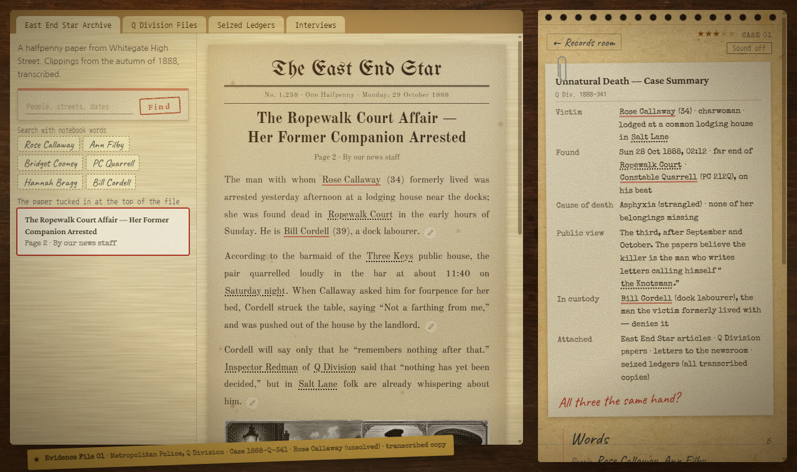
CASE 01 · 1888 · Whitegate, East End, London (fiktiver Ort)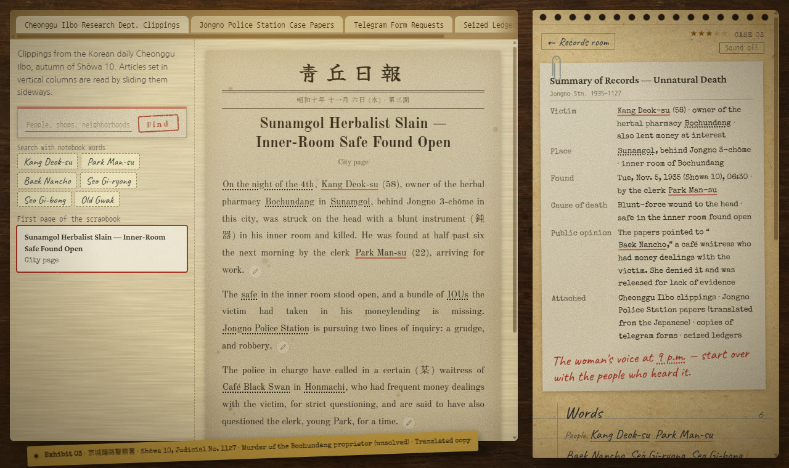
CASE 03 · 1935 · Sunamgol hinter Jongno 3-chōme, Gyeongseong (fiktive Gasse)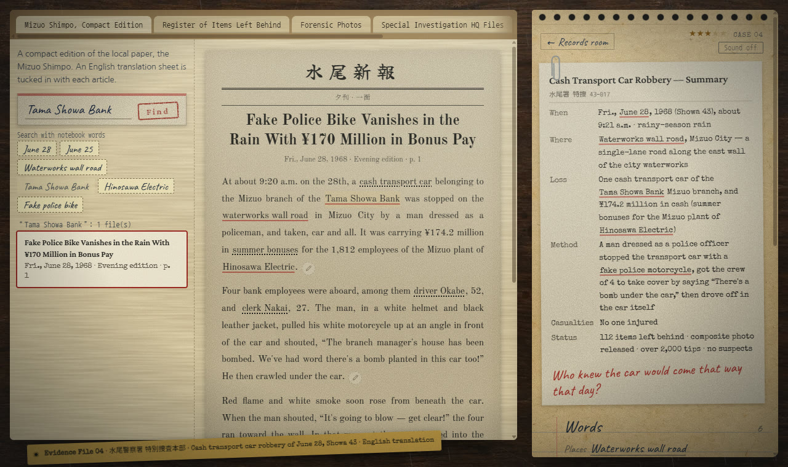
CASE 04 · 1968 · Mizuo, Tokio (fiktiver Ort)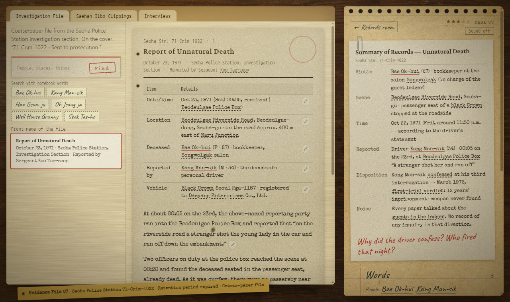
CASE 07 · 1971 · Beodeulgae, Seoha-gu, Seoul (fiktiver Ort)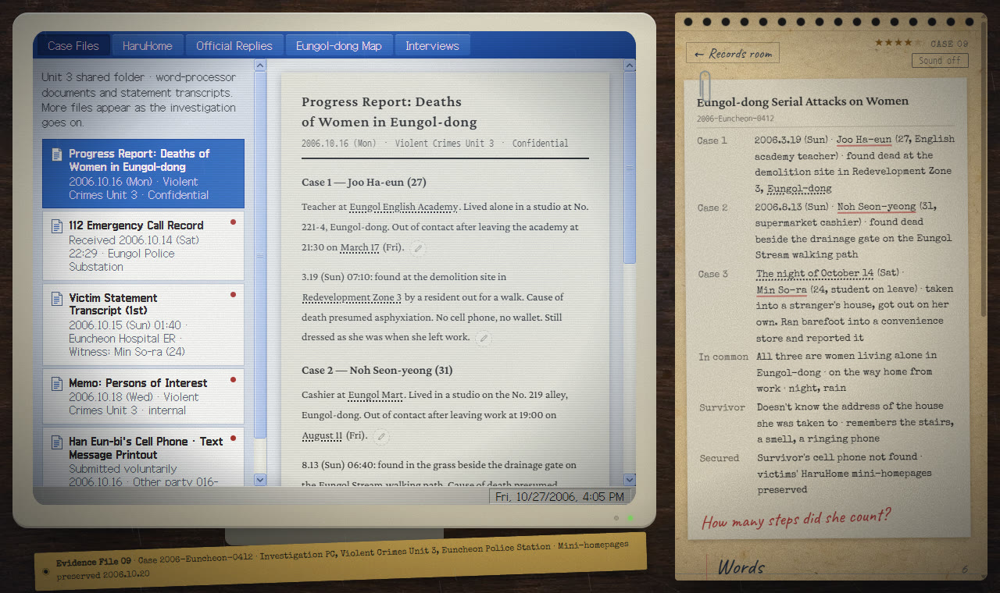
CASE 09 · 2006 · Eungol-dong, Euncheon (fiktiver Ort)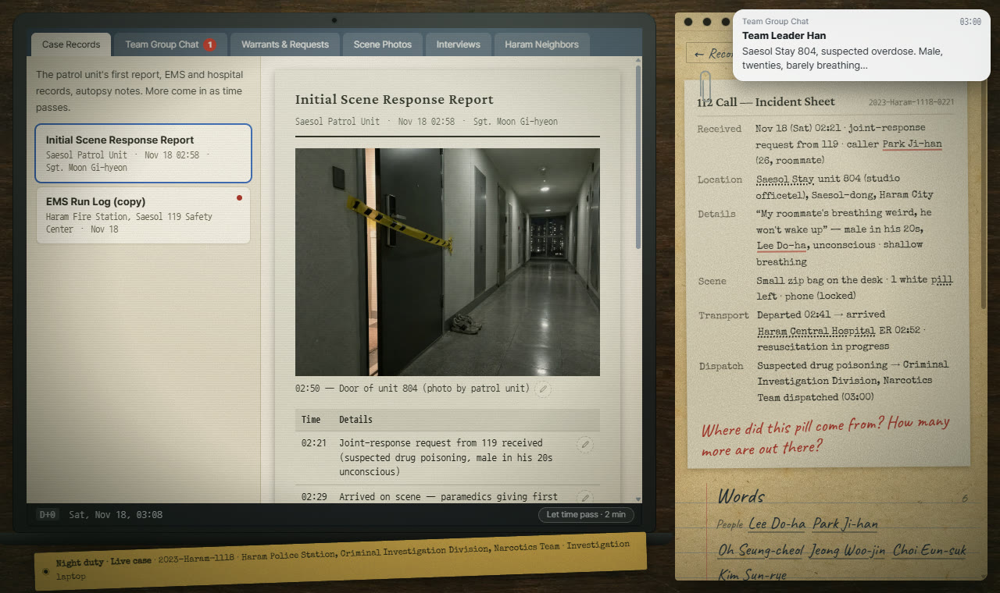
CASE 13 · 2023 · Saesol-dong, Haram (fiktive Neustadt im Großraum Seoul)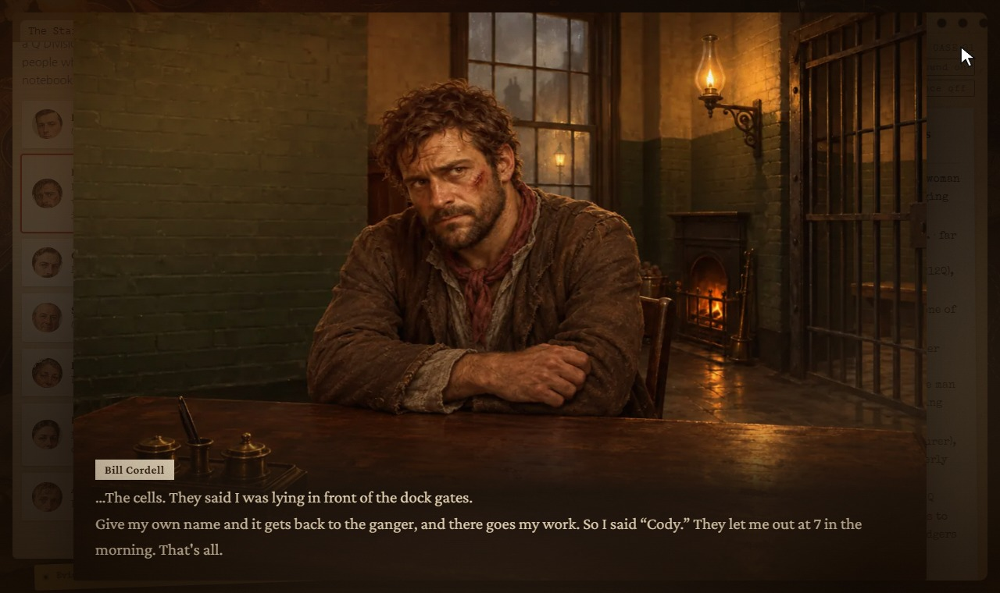
Eine Aussage bricht am Vernehmungstisch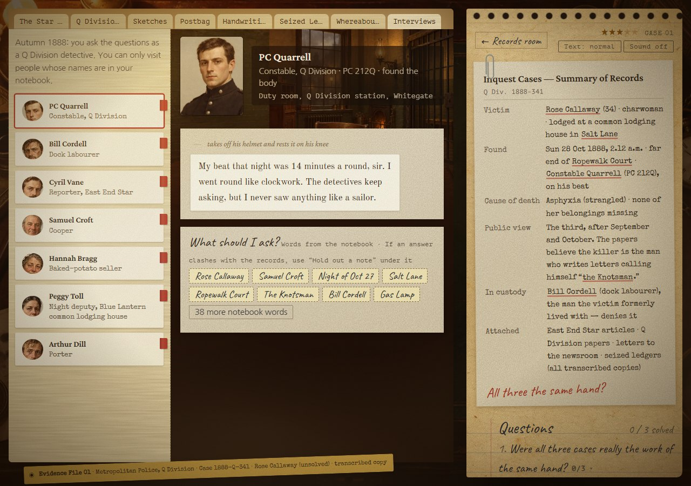
Befragung eines Zeugen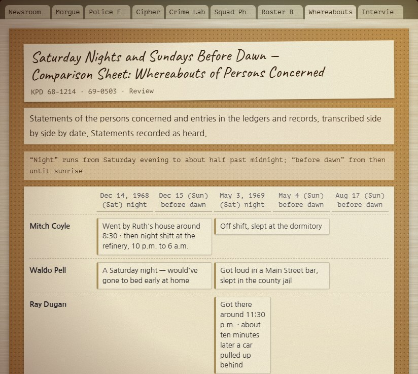
Die Aufenthaltstafel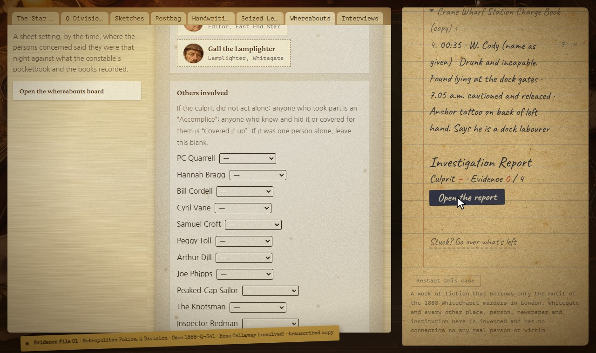
Der Bericht: weitere Beteiligte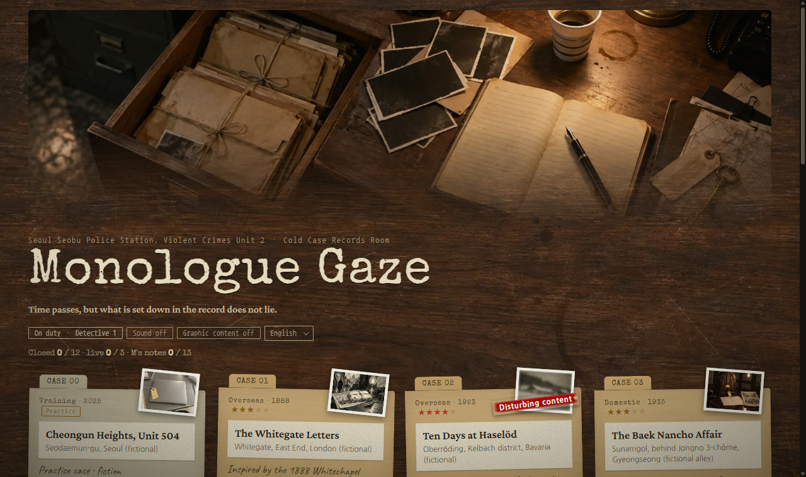
Das ArchivDie Bilder wurden mit KI erzeugt und einzeln mit den Fallakten abgeglichen. Stimmen: ElevenLabs. Geräusche: CC0-Aufnahmen von Freesound und Kenney. Text und Code entstanden mit Unterstützung von KI.